Scan every AP across 2.4 / 5 / 6 GHz, rank interference, run floor-plan site surveys and verify the network with 12 built-in tools — on the Windows laptop you already carry. Free to try on the Microsoft Store.
Everything the field job needs, in one tool — scan, analyze, survey, verify, export.
SSID, BSSID, RSSI, band, channel, width and vendor across 2.4 / 5 / 6 GHz — flat or grouped-by-SSID views with AP-Database name matching.
Congested channels ranked worst-first (co-channel + overlapping), in-app and in every export.
Point-by-point capture on a floor-plan background, organised Project > Site > Building > Floor, with per-band export sections.
BSSID transitions on an RSSI timeline with event markers, plus sticky-client detection with an exportable verdict ledger.
Per-AP RSSI / estimated-SNR history graphs and target-AP tracking as you move — exportable to CSV and Excel.
Per-AP beacon decode — identity, radio, capabilities, vendor fields and the raw IE dump, all copyable. Detects Wi-Fi 7 (802.11be): 320 MHz, MLO, FTM/RTT.
Ping, DNS, Traceroute, Port Check, HTTP, TLS Inspector, TCP Throughput, Latency Trend, Subnet Calculator, Wake-on-LAN, NTP, ARP Table.
AES-256-GCM encrypted AP Database, optional AES-256 password on all CSV / Excel / ZIP exports, encrypted on-device logs.
15 languages, light & dark themes, hover help on every control. Optional Survey Pro subscription for floor-plan surveys up to 5,000 points.
Every AP on 2.4 / 5 / 6 GHz appears in seconds — signal, channel, width, vendor — with congested channels ranked worst-first.
Load the floor plan, walk the site, capture a fresh scan at each check point. Organised Project > Site > Building > Floor.
Export CSV / Excel with per-band sections and interference analysis, protected with an optional AES-256 password. Done.
No mockups, no compositing — click any shot for the full-size view.
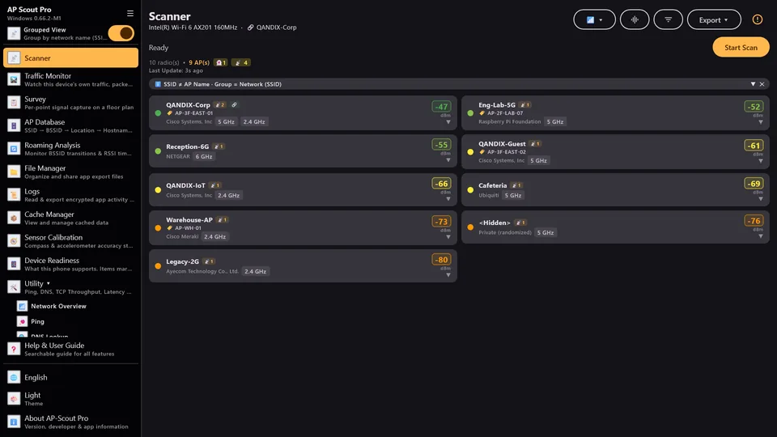
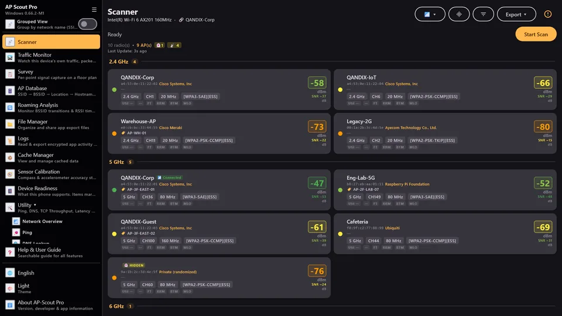
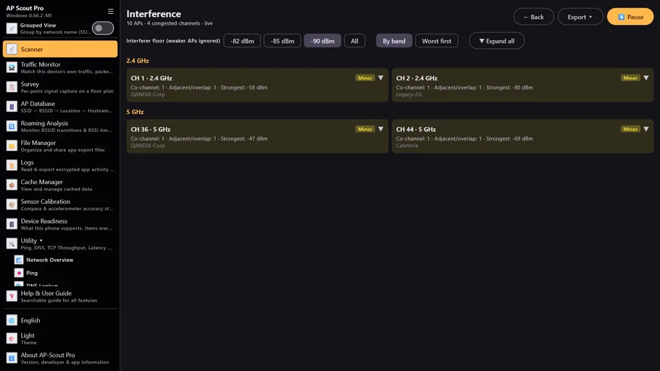
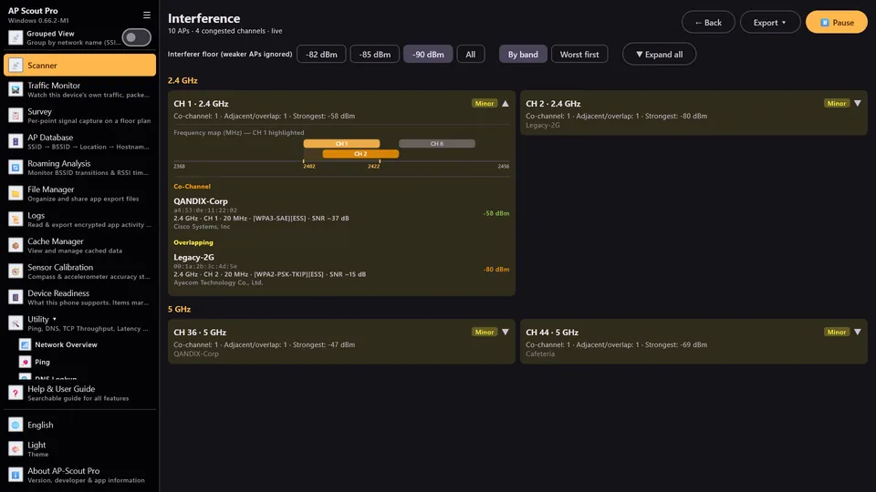
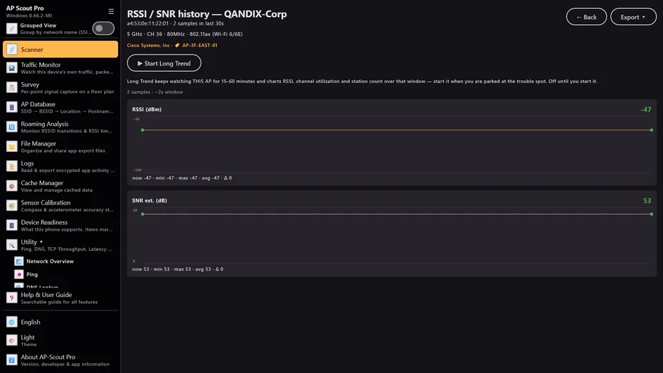
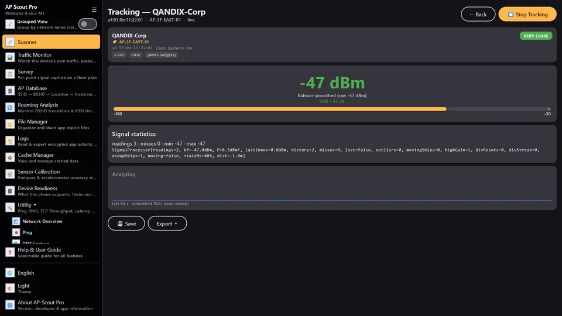
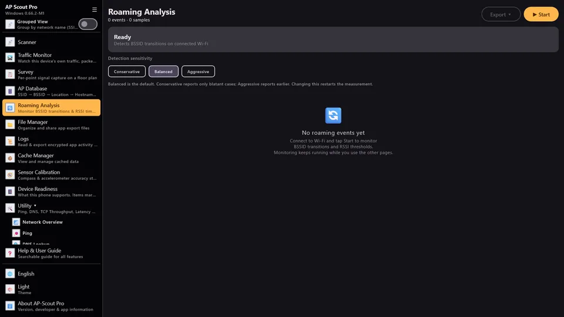
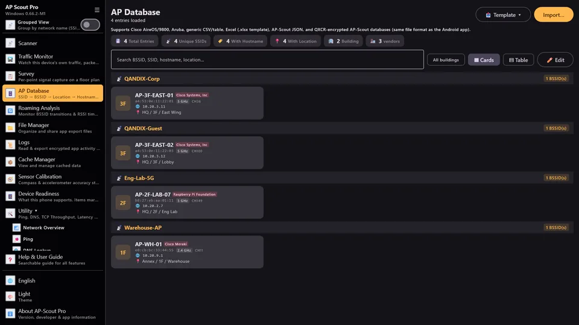
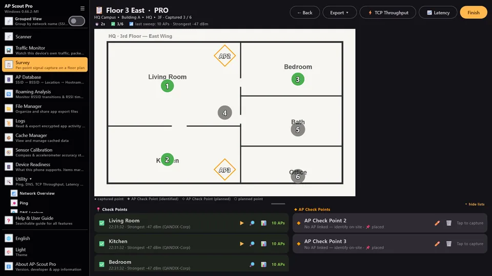
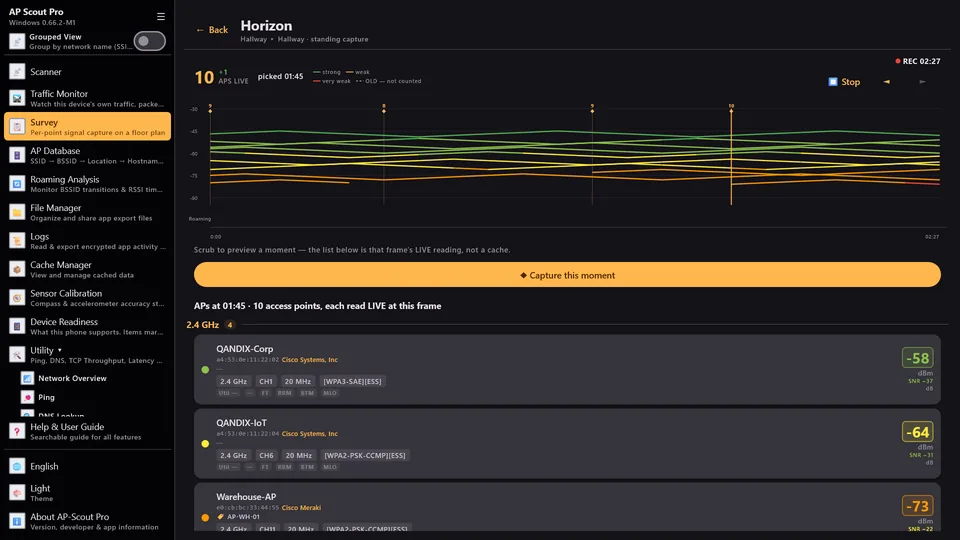
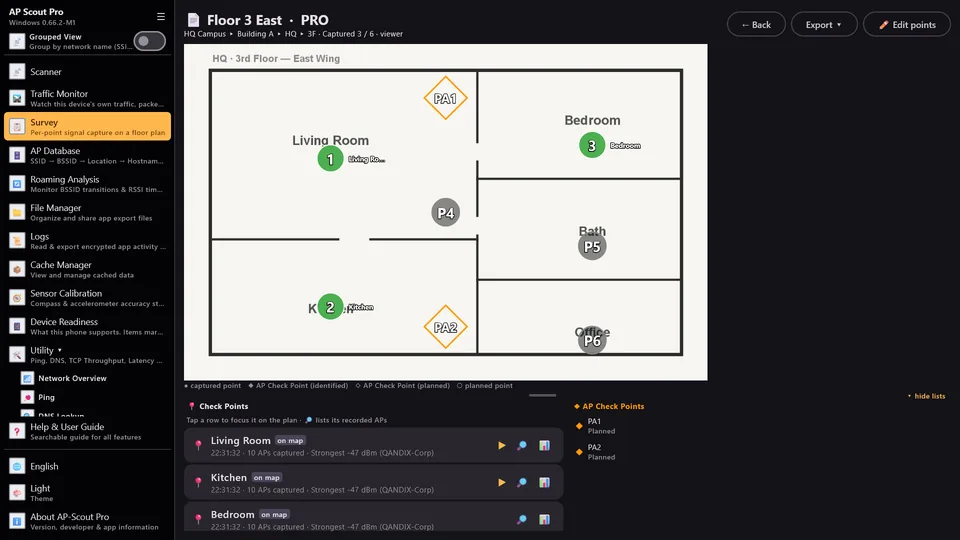
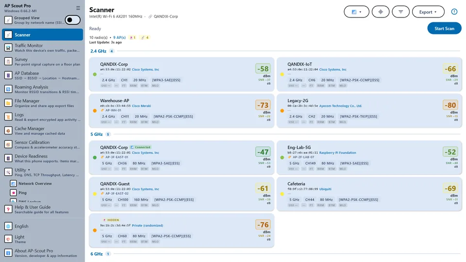
AP-Scout Pro is free to try from the Microsoft Store. The optional Survey Pro monthly subscription unlocks floor-plan survey features — surveys up to 5,000 points — at a fraction of the cost of enterprise survey suites. The subscription is managed through your Microsoft account.
It's free to try from the Microsoft Store. An optional Survey Pro monthly subscription unlocks floor-plan survey features (surveys up to 5,000 points), managed through your Microsoft account.
No. AP-Scout Pro works with your laptop's built-in Wi-Fi adapter. 6 GHz scanning requires an adapter and driver that support it.
It scans 2.4, 5 and 6 GHz networks where your adapter supports them, and detects Wi-Fi 7 (802.11be) capabilities — 320 MHz channels, MLO, FTM/RTT — in the per-AP beacon decode.
Nowhere. There is no backend and no telemetry. Scans, surveys and the AP Database live in the app's private storage; files leave the device only when you export them — with an optional AES-256 password.
Ping, DNS, Traceroute, Port Check, HTTP, TLS Inspector, TCP Throughput, Latency Trend, Subnet Calculator, Wake-on-LAN, NTP and ARP Table.
Windows 10 and Windows 11, installed from the Microsoft Store.
Scan, survey and export on the laptop you already carry. Free to try — upgrade to Survey Pro only when the job needs floor-plan surveys.